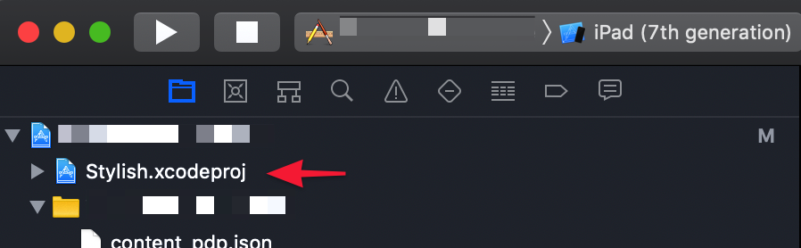
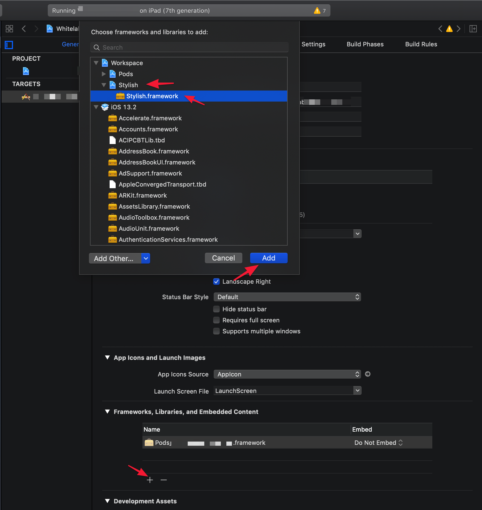
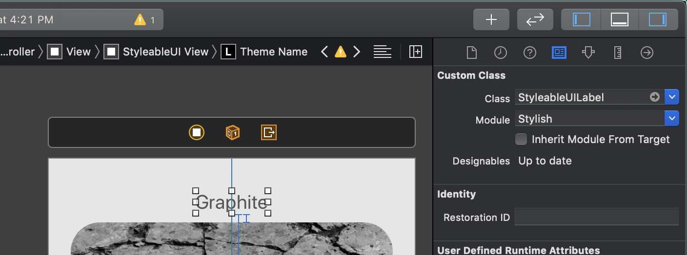
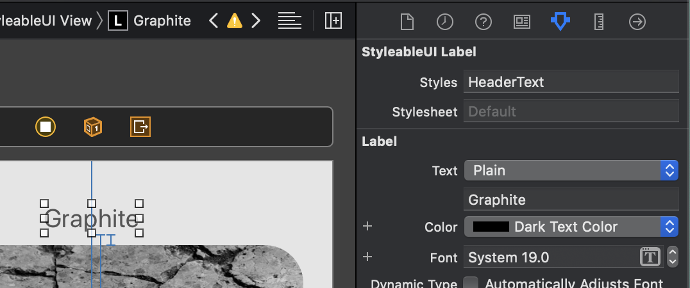
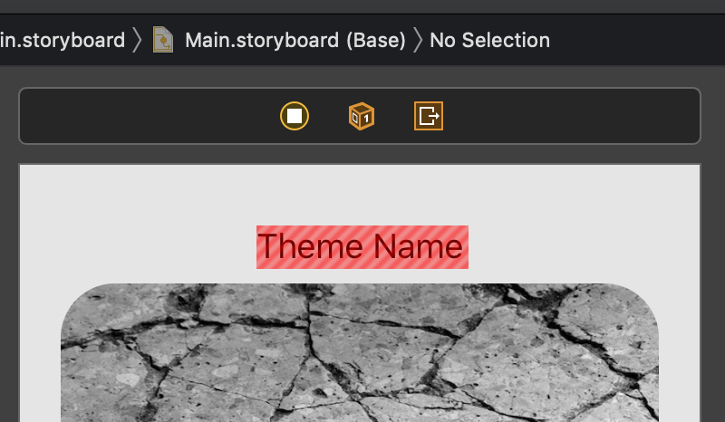

Stylish Framework
In Kinetic Commerce, we use Stylish to able to switch different styles for UILabel, UIView, UITextView, etc. It makes switch different styles use different font, color, very easy. All you need to do is create a style sheet and use the styles you created inside style sheet when you setup a view.
Installation
To install Stylish:
Adds Stylish as a git sub-module. Run below command in your project root folder, where you do
pod initor where.xcodeprojfile locates.git submodule add https://github.com/daniel-hall/Stylish.gitOpen your project (
.xcworkspace) in Xcode, Select Files > Add Files To “…”, then choose theStylish/Stylish.xcodeprojadds into the project root tree.
Select your project, general tab, in the framework area adds the Stylish framework thats come with the
Stylish.xcodeproj.
In your project, you need to extend and override
prepareForInterfaceBuilderinUIViewandStyleableUIViewif you want to have live style rendering in Interface Builder storyboards. Put following code in your project. You can create aStylishExtension.swiftfile if needed./* #### IMPORTANT!! #### The below two extensions must always be defined in the an app that is using Stylish if you want to have live style rendering in Interface Builder storyboards. */ extension UIView { // This is the only entry point for setting global variables // in Stylish for Interface Builder rendering (since App Delegate // doesn't get run by IBDesignable. So we are setting up the global // stylesheet that we want used for IBDesignable rendering here. open override func prepareForInterfaceBuilder() { Stylish.stylesheet = Graphite() } } // In order to force IBDesignable to compile and use code from this hosting // app (specifically, the prepareForInterfaceBuilder() override above where // we set the global stylesheet for use during IBDesignable rendering), we // need to either 1) Create an IBDesignable view inside the host app // (like ProgressBar, in this case) and actually place an instance of it // on the storyboard or 2) Override prepareForInterfaceBuilder in one // Stylish's included styleable components here in the host app. Note that // it must be one of the Stylish components actually in use on the storyboard, // so it might not be StyleableUIView in your app, but might instead be // StyleableUILabel, StyleableUIButton, etc. extension StyleableUIView { open override func prepareForInterfaceBuilder() { super.prepareForInterfaceBuilder() } }
Create Styles
You will need to first create a stylesheet.
Create an object
AppStyles.swift(Use your own preferred name for the object).Create the styles you want, you can add more styles later if needed to suit your need. Here is an example to setup the font, text color, and text alignment. If you want to see more examples, I can attach some examples at the end of this note.
struct HeaderText: Style { var propertyStylers = [ font.set(value: .systemFont(ofSize: 20.0)), textColor.set(value: .darkGray), textAlignment.set(value: .left) ] }After creating the style, you need to create a styles dictionary that defines a mapping of style names to style instances.
let styles: [String : Style] = [ "HeaderText": HeaderText() ]So this is what
AppStyles.swiftlooks like with one styleHeaderText:class AppStyle: Stylesheet { let styles: [String: Style] = [ "HeaderText": HeaderText() ] struct HeaderText: Style { var propertyStylers = [ font.set(value: .systemFont(ofSize: 20.0)), textColor.set(value: .darkGray), textAlignment.set(value: .left) ] } }
Use Styles
To use the style you created, you can create the view (Here we use UILabel as an example) in the desired place of storyboard or .xib file.
Change the
UILabeltoStyleableUILabelin the identity inspector
Enter the styles name
HeaderTextin the attributes inspector.
Now you should see the label changed to the style
HeaderTextIf you see a red box around the view, then you will need to refresh the view to make it work. Select
.xibor.storyboardfile in the project inspector, then Editor → Refresh all Views. Make sure it needs to select on the file in project inspector. After you select refresh all views, you will see a progress bar building the project in Xcode. (If you didn’t see the progress bar, then you didn’t select the file. Click on the file and try it again!)
If you still see a red box, then check the style name. If you see an error message and a blank view, then you have some error in the stylesheet or the styleable view you used. It doesn’t give very nice error message. Try to debug by removing the code to see which code is having the issue.
Custom Styleable View
The framework comes with StyleableUIView, StyleableUILabel, StyleableUITextField, StyleableUITextView, StyelableUIButton, and StyleableUIImageView. You can always create a Styleable View for yourself if needed.
For example, I created a
RateViewwhich adapt toStyleableprotocol. The benefit is that you can see the realtime effect in.xiborstoryboardwhere you use it. Otherwise, you will only see a white space when you use a normal view inside any.xiborstoryboard.
How to Create a Custom Styleable View
To create the custom styleable view, you will need to create a view normally first. Here I use the RateView as an example. First step is to create the view itself:
Create the
RateViewextendsUIView. Remember to mark this object@IBDesignableCreate
initfunctionoverride init(frame: CGRect) { super.init(frame: frame) setImageViews(size: maxRating) } required init?(coder: NSCoder) { super.init(coder: coder) setImageViews(size: maxRating) }Inside
initfunction setup the view, create all the constraint. (Assuming we create thisUIViewprogrammatically).Create a redraw function that will redraw the view when data changes.
Try building this view and run it to make sure this view is all good. This is to avoid any issue on view itself.
After creating the normal view, we will now prepare to make this view styleable:
Extend
RateViewto implementStyleableprotocol.Create
StylesandStylesheetto adapt toStyleableprotocol. When we apply the styles and stylesheet make sure to redraw to apply the changes. Note that you will need to make them@IBInspectableto able to change in the interface builder.@IBInspectable var styles: String = "" { didSet { redraw(rating: currentRating) Stylish.applyStyleNames(styles, to: self, using: stylesheet) } } @IBInspectable var stylesheet: String? = nil { didSet { redraw(rating: currentRating) Stylish.applyStyleNames(styles, to: self, using: stylesheet) } }
Now you should able to see the view in .xib or .storyboard where uses the view. If you want to create stylesheet to customize the view, here is the additional step to add to the RateView:
Create a
PropertyStylerlike below. You can change the value and target to type you want. If its an int, then value will beInt?, and target will be your own view. Because I added toRateViewso target isRateView. InsidePropertyStyler‘sapplyfunction, you will need to assign the value to a class property if needed and redraw the view with the new value.struct RateColor: PropertyStyler { static var propertyKey: String { return "rateColor" } static func apply(value: UIColor?, to target: RateView, using bundle: Bundle) { target.tintImageColor = value target.redraw(rating: target.currentRating) } }Create property stylers array to expose the property styler you created.
static var propertyStylers: [AnyPropertyStylerType.Type] { return [RateColor.self] }(This is optional) Make type alias to make access to the struct easier. Always extension to
Styleeven if you put this inRateView.swift.extension Style { /// Sets the star image tint color for the ratings. typealias rateColor = RateView.RateColor }
How to use the custom styles I just created? Inside the stylesheet for your app, you can create the structure like this:
struct RateView : Style {
var propertyStylers = [
rateColor.set(value: secondaryColor)
]
}
Full code for
RateView.swift@IBDesignable class RateView: UIView, Styleable { struct RateColor: PropertyStyler { static var propertyKey: String { return "rateColor" } static func apply(value: UIColor?, to target: RateView, using bundle: Bundle) { target.tintImageColor = value target.redraw(rating: target.currentRating) } } static var propertyStylers: [AnyPropertyStylerType.Type] { return [RateColor.self] } @IBInspectable var styles: String = "" { didSet { redraw(rating: currentRating) Stylish.applyStyleNames(styles, to: self, using: stylesheet) } } @IBInspectable var stylesheet: String? = nil { didSet { redraw(rating: currentRating) Stylish.applyStyleNames(styles, to: self, using: stylesheet) } } static let STAR_WIDTH: CGFloat = 18.0 static let STAR_HEIGHT: CGFloat = 18.0 static let STAR_INNER_PADDING: CGFloat = 0.0 static let IMAGE_STAR_EMPTY: UIImage = UIImage(named: "ic_star_empty", in: Bundle.current, compatibleWith: nil)! static let IMAGE_STAR_FULL: UIImage = UIImage(named: "ic_star_full", in: Bundle.current, compatibleWith: nil)! static let IMAGE_STAR_HALF: UIImage = UIImage(named: "ic_star_half", in: Bundle.current, compatibleWith: nil)! private var imageViews: [UIImageView] = [] @IBInspectable var maxRating: Int = 5 { didSet { setImageViews(size: maxRating) redraw(rating: currentRating) } } @IBInspectable var currentRating: Double = 1 { didSet { redraw(rating: currentRating) } } var tintImageColor: UIColor? override init(frame: CGRect) { super.init(frame: frame) setImageViews(size: maxRating) } required init?(coder: NSCoder) { super.init(coder: coder) setImageViews(size: maxRating) } /// Setup the image view. Only call this function if the max value of rating has been changed. /// - Parameter size: The max value for the rating. private func setImageViews(size: Int) { // Clear imageView if there are existing ones. imageViews.forEach { x in x.removeFromSuperview() } imageViews.removeAll() for i in 0..<size { let imageView = UIImageView() imageView.translatesAutoresizingMaskIntoConstraints = false addSubview(imageView) // Setup constraint NSLayoutConstraint(item: imageView, attribute: .width, relatedBy: .equal, toItem: nil, attribute: .notAnAttribute, multiplier: 1.0, constant: RateView.STAR_WIDTH).isActive = true NSLayoutConstraint(item: imageView, attribute: .height, relatedBy: .equal, toItem: nil, attribute: .notAnAttribute, multiplier: 1.0, constant: RateView.STAR_HEIGHT).isActive = true // Leading if let last = imageViews.last { // Not first leading NSLayoutConstraint(item: imageView, attribute: .leading, relatedBy: .equal, toItem: last, attribute: .trailing, multiplier: 1.0, constant: RateView.STAR_INNER_PADDING).isActive = true } else { // First leading NSLayoutConstraint(item: imageView, attribute: .leading, relatedBy: .equal, toItem: self, attribute: .leading, multiplier: 1.0, constant: 0.0).isActive = true } // Top NSLayoutConstraint(item: imageView, attribute: .top, relatedBy: .equal, toItem: self, attribute: .top, multiplier: 1.0, constant: 0.0).isActive = true // Bottom NSLayoutConstraint(item: imageView, attribute: .bottom, relatedBy: .equal, toItem: self, attribute: .bottom, multiplier: 1.0, constant: 0.0).isActive = true // Last Trailing if (i == size - 1) { NSLayoutConstraint(item: imageView, attribute: .trailing, relatedBy: .equal, toItem: self, attribute: .trailing, multiplier: 1.0, constant: 0.0).isActive = true } imageViews.append(imageView) } } /// Display the rating based on the number provided. If you want to refresh the rate, assign to `currentRate` it will refresh automatically. /// - Parameter rating: How many filled stars to display. Currently although it is a double, it will only support .5 rating. So if its 4.1 or 4.9, it will treated like 4.5 private func redraw(rating: Double) { // Apply current rating let intRating: Int = Int(floor(rating)) for (index, imageView) in imageViews.enumerated() { if index == intRating - 1 { // last element of rating imageView.image = Double(intRating) < rating ? RateView.IMAGE_STAR_HALF : RateView.IMAGE_STAR_FULL } else if index < intRating { imageView.image = RateView.IMAGE_STAR_FULL } else { imageView.image = RateView.IMAGE_STAR_EMPTY } // Tint image color if let tintImageColor = tintImageColor { imageView.image = imageView.image?.withTintColor(tintImageColor) } } } } extension Style { /// Sets the star image tint color for the ratings. typealias rateColor = RateView.RateColor }
Trouble Shooting
If you see any error and don’t know why, try to see if you access to the asset folder with out specify the bundle. I had several times that access to image or color from the asset directly and creating the problem. Took me long time to figure this out. So check your code, make sure it does not do anything like this:
// Do not do this
UIImage(named: "ic_star_empty")!
// Do this.
UIImage(named: "ic_star_empty", in: Bundle(identifier: "com.xxx.xxxxx"), compatibleWith: nil)!
// Do not do this
UIColor(named: key.rawValue)!
// Do this
UIColor(named: key.rawValue, in: Bundle(identifier: "com.xxx.xxxxx"), compatibleWith: nil)
More Examples for Style:
Button
struct DefaultButton : Style { var propertyStylers = [ titleColorForNormalState.set(value: UIColor(red:0.21, green:0.29, blue:0.36, alpha:1.0)), titleColorForHighlightedState.set(value: UIColor(red:0.18, green:0.24, blue:0.31, alpha:1.0)), titleColorForDisabledState.set(value: UIColor(red:0.18, green:0.24, blue:0.31, alpha:1.0)), cornerRadiusRatio.set(value: 0.16), borderWidth.set(value: 1.0), borderColor.set(value: UIColor(red:0.21, green:0.29, blue:0.36, alpha:1.0)), backgroundColor.set(value: UIColor(white: 0.82, alpha: 1.0)) ] }Set text
struct StylesheetTitle : Style { var propertyStylers = [text.set(value: "Graphite")] }Set image
struct ThemeImage : Style { var propertyStylers = [image.set(value: UIImage(named: "stone", in: Bundle(for: ProgressBar.self), compatibleWith: nil))] }Set round corner
struct RoundedStyle : Style { var propertyStylers = [cornerRadius.set(value: 30.0), masksToBounds.set(value: true)] }
Note that you will also able to read a json stylesheet instead of writing all the styles by code. For detail, download the example project and learn from there.